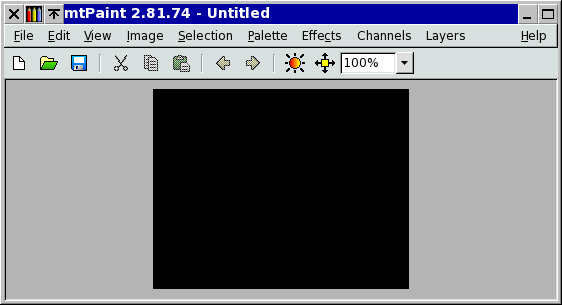
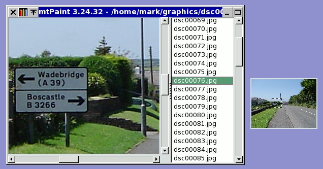
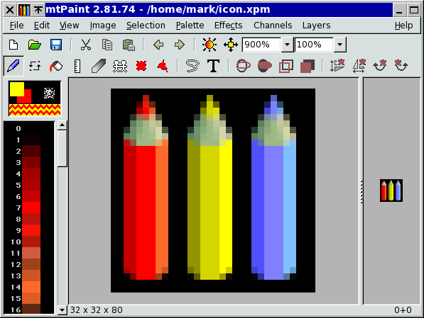

Základního prohlí¾ení a manipulací s obrázky lze dosáhnout s vypnutými v¹emi nástrojovými li¹tami. Nástrojové li¹ty mù¾ete zapínat a vypínat v menu Zobrazit, co¾ vám umo¾ní mnohem více zpøehlednit rozhraní, kdy¾ nepotøebujete tyto extra funkce. Zde je obrázek, jak vypadá mtPaint, který má zapnutou pouze hlavní nástrojovou li¹tu:

V¹echny základní manipulace s obrázkem lze provést s nìkolika kliknutími my¹i, nebo stisky kláves: Zvìt¹ování, panorámování, oøezání, zmìna velikosti a barev. Jestli¾e si najdete èas se nauèit tìch pár klávesových a my¹ích zkratek, tak vám opravdu pomohou zvý¹it va¹í produktivitu.
Kdykoliv se mù¾ete pøibli¾ovat, èi vzdalovat pomocí kláves + a -. Mù¾ete se také pøiblí¾it na pøeddefinovanou hodnotu stiskem 1-9. Nìkdy je u¾iteèné se navigovat pøes celý obrázek stiskem klávesy End pro otevøení Pøehledového okna. Toto okno zobrazuje miniaturu aktuálního obrázku, který mù¾ete pou¾ít pro zamìøení pohledu. Abyste to udìlali, stisknìte kurzorové klávesy pro pøesun, nebo kliknìte na miniaturu my¹í. Velikost miniatury lze nastavit v oknì voleb.
Pokud si chcete zvìt¹it pøíslu¹nou oblast obrázku, udìláte to najetím kurzoru my¹i nad oblast, kde chcete mít støed a následnì stisknete prostøední tlaèítko my¹i. Jestli¾e se následnì pøiblí¾íte, tak tento bod na plátnì bude novým støedek aktuálního pohledu.
Kdykoliv mù¾ete skrýt v¹echna menu, li¹ty, paletu a stavovou li¹tu pøi po¾adavku zobrazení co nejvìt¹í plochy obrázku. Jednodu¹e stisknìte klávesu Home. Opìtovný stisk klávesy Home vrátí ovládání zpìt.
Jestli¾e spustíte mtPaint s více jak jedním jménem souboru na pøíkazové øádce, jako 'mtpaint *.jpg', tak se tyto soubory objeví v seznamu v oknì. Kdykoliv potom kliknete na název souboru, tak se obrázek nahraje do mtPaintu. To se mù¾e hodit pro úpravu snímkù animace, nebo práci s mnoha digitálními fotografiemi. Ve verzi mtPaintu pro Windows se tato funkce mù¾e pou¾ívat vybráním souborù v Prùzkumníku, kliknutím pravým tlaèítkem a pou¾itím volby 'Poslat kam' pro jejich poslání mtPaintu.
Zde je pøíklad, co mù¾ete dìlat s pou¾itím okna pøíkazové øádky, pøehledového okna a hlavního okna v celoobrazovkovém re¾imu:

Pokud upravujete obrázek pøi velkém pøiblí¾ení, je nìkdy u¾iteèné mít druhý obrázek ve 100% velikosti a vidìt, jak to vypadá, ale bez neustálého zvìt¹ování a zmen¹ování. Toto je vìc, kterou vám umo¾ní Okno Zobrazení. Zapnete a vypnete ho pomocí stisknutí klávesy 'V', nebo pou¾itím menu Zobrazit. Nastavení zvìt¹ení okna zobrazení se provádí v druhém okénku na hlavní nástrojové li¹tì. Ve výchozím stavu , kdy¾ pou¾ijete posuvník u hlavního editaèního okna, tak se také posune obrázek v oknì zobrazení. Vypnout tuto funkci mù¾ete volbou v menu Zobrazit.
Zde je pøíklad, k èemu se mù¾e Okno Zobrazení pou¾ít:
